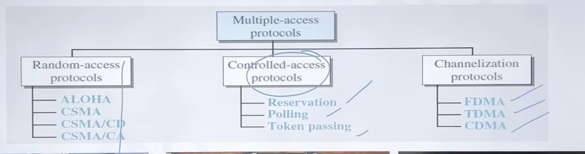

Multiple Access Protocols (all three branches — Random-access, Controlled-access, Channelization) fall under the Data Link Layer of the OSI model — more specifically, its MAC (Medium Access Control) sublayer.
Why Data Link Layer, and not something else?
Recall that in the OSI model, the Data Link Layer is split into two sublayers:
- LLC (Logical Link Control) sublayer — handles flow control, error control, and framing (interacts with the Network layer above it).
- MAC (Medium Access Control) sublayer — handles who gets to use the shared physical medium and when. This is exactly the job of ALOHA, CSMA, CSMA/CD, CSMA/CA, Reservation, Polling, Token Passing, FDMA, TDMA, CDMA.
Since these protocols exist purely to decide which station transmits over the shared channel at a given moment (avoiding or managing collisions), they naturally belong to the sublayer that manages access to the medium — the MAC sublayer, which sits within the Data Link Layer.
Quick memory hook
- Physical Layer → deals with raw bits, signals, cables (below this).
- Data Link Layer → MAC sublayer → decides who transmits when (this is where Multiple Access Protocols live).
- Data Link Layer → LLC sublayer → handles framing, flow control, error control.
- Network Layer → routing (above this).
MCQ trap points
- "CSMA/CD belongs to which layer?" → Data Link Layer (MAC sublayer) — one of the most repeated direct questions.
- Don't confuse this with TDMA/FDMA/CDMA in mobile communication contexts — in cellular networks these are sometimes discussed as Physical Layer techniques (since they deal with actual frequency/time/code allocation of the radio spectrum). But in the standard computer networks syllabus (Forouzan-based, which IBPS SO follows), all multiple access protocols are taught under Data Link Layer → MAC sublayer — stick with this for your exam.
- MAC address (physical/hardware address) is also handled at this same sublayer — a nice connecting fact if a question links MAC addressing with multiple access protocols.
This is the top-level classification of Multiple Access Protocols in Computer Networks — the "family tree" that ALOHA, CSMA, CSMA/CD, and CSMA/CA (which we've already covered) belong to. For IBPS SO, this classification itself is a very common one-line MCQ ("Which of these is NOT a random-access protocol?" type questions), so let's map out all three branches clearly.
At the top: Multiple-access protocols — these decide how multiple stations share one common communication channel. They split into 3 main categories:

1. Random-Access Protocols
Core idea: No station has a fixed turn or priority — any station can try to transmit whenever it wants, and the protocol just manages what happens when collisions occur.
- ALOHA — transmit whenever ready, no sensing at all (Pure ALOHA / Slotted ALOHA — we covered this).
- CSMA — "sense before you send" to reduce collision chances (we covered this).
- CSMA/CD — CSMA + Collision Detection — used in wired Ethernet; detects a collision mid-transmission and stops immediately (we covered this).
- CSMA/CA — CSMA + Collision Avoidance — used in WiFi; avoids collisions upfront since wireless can't detect them (we covered this).
2. Controlled-Access Protocols
Core idea: Stations don't transmit freely — they need permission from either another station or a central coordinator before sending. This avoids collisions almost entirely, but adds coordination overhead.
- Reservation: Before sending data, a station must reserve the channel in advance for a specific time slot. Time is divided into intervals; in each interval, there's a "reservation frame" where stations state their intent to send, then the actual data transmission happens in the reserved order. No collision because everyone knows their assigned slot in advance.
- Polling: Works only if there's one central controller (primary station) and the rest are secondary stations. The primary station asks ("polls") each secondary station in turn — "do you have data to send?" Only the station being polled can transmit at that moment. Simple and collision-free, but the whole system depends on the primary station — if it fails, communication stops (single point of failure, a common MCQ trap).
- Token Passing: Stations are arranged in a logical ring. A special small frame called a token circulates around the ring. Only the station currently holding the token is allowed to transmit; after finishing, it passes the token to the next station. No collisions since only the token-holder can send. Used in Token Ring and Token Bus networks — another classic exam pairing.
3. Channelization Protocols
Core idea: Instead of letting stations compete for the whole channel, the available bandwidth is divided among stations, so each one gets its own guaranteed share — no competition, no collision at all.
- FDMA (Frequency Division Multiple Access): The available bandwidth is divided into frequency bands, and each station gets a fixed frequency band to use for the entire duration. Like giving each station its own separate radio frequency — they can all transmit simultaneously without interfering, since they're on different frequencies.
- TDMA (Time Division Multiple Access): The available bandwidth (a single frequency) is divided into time slots, and each station gets a fixed time slot in a repeating cycle to transmit. Everyone shares the same frequency but takes turns based on time.
- CDMA (Code Division Multiple Access): All stations transmit simultaneously over the same frequency and at the same time, but each is assigned a unique code. The receiver uses this code to separate and extract the intended signal from the mixed transmission. This is the most advanced of the three and used in mobile/cellular communication.
Quick comparison table (exam gold)
| Category | Basis | Examples | Collision? |
|---|---|---|---|
| Random-access | No fixed turn, contention-based | ALOHA, CSMA, CSMA/CD, CSMA/CA | Possible |
| Controlled-access | Needs permission/coordination | Reservation, Polling, Token Passing | None |
| Channelization | Bandwidth is pre-divided | FDMA, TDMA, CDMA | None |
MCQ trap points
- "Which protocol has the highest chance of collision?" → Random-access category (especially Pure ALOHA).
- "Which protocol uses a token?" → Token Passing (controlled-access) — don't confuse with time slots in TDMA.
- "Which divides the channel by frequency vs time vs code?" → FDMA / TDMA / CDMA respectively — a very frequently repeated direct-match question.
- Polling requires a primary/central station — single point of failure; Token Passing has no central controller (fully distributed) — this distinction is a favorite trap.
- CSMA family (all 4 protocols) falls under Random-access, not Controlled-access — students sometimes misplace CSMA/CD under channelization by mistake.